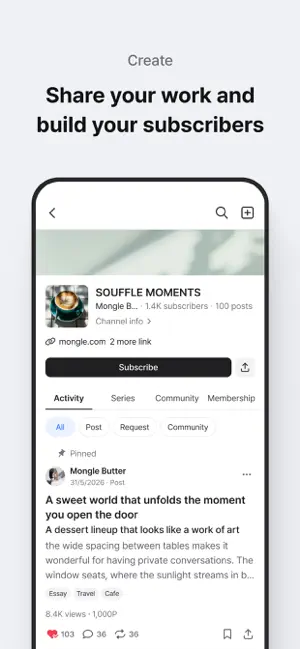

POSTYPE 付费墙背后的产品工程：从可见性框到 10 万字符上限的设计逻辑
拆解韩国创作者变现平台 POSTYPE 的几个核心产品决策——可见性框为什么不是简单的全文付费、10% 统一费率靠什么撑住、10 万字符上限的真实边界，以及这些设计背后的工程取舍。
我第一次是在它的官网上看到 POSTYPE 的付费帖子时，直觉反应是：这收费系统跟国内的付费阅读不太一样。
国内平台习惯了"整篇锁死 + 少量免费试读"的二元结构——读者要么看全文要么看不了。但 POSTYPE 用了一个叫"可见性框"（Visibility Box）的东西把帖子分成了预览区和付费解锁区，中间可以插，位置可以调，甚至一个帖子里能嵌好几个。想亲手试试这个编辑器的话，可以去下载拿安装包。
这不是 UI 小改动。它背后是一整套付费转化的产品思路，连字符上限、虚拟币汇率、平台费率这些看起来独立的参数，其实都跟它联动。
为什么可见性框不是"全文付费"
从工程上看，可见性框的实现比简单的全文付费复杂——编辑器需要在 Markdown 里插入一个特殊块，渲染时平台要判断当前用户是否已购买，决定是显示框内内容还是显示付费按钮。那为什么要多这一层复杂度？
核心问题在付费转化率的物理极限。
如果一篇 5000 字的小说全锁，读者看到的就是标题、封面和一个价格。这时候他做决策的依据极少——要么信任作者直接付，要么划走。经验数据告诉我，纯全文付费的转化率大概在 1% 到 3% 之间，而且这个数字跟内容质量的相关性很弱，更多取决于作者已有的粉丝基数。
可见性框的设计思路是把决策拆成两步：先用免费内容证明价值，再在读者情绪峰值处拦截收费。你可以让读者看完完整的故事铺垫、角色出场甚至前几个情节转折，然后在最吊胃口的地方（比如"就在他推开门的那一刻——"）切付费墙。这时候读者已经投入了阅读时间，沉没成本让转化率比全文付费高出一个数量级。
但这里有个工程上的取舍我特别在意：预览区的字数有没有硬性下限？后来去postype文档翻了一下才弄明白，样本文档里没有明确说这个硬性下限，但我观察了几个 TOP 创作者的帖子，预览区通常占正文的 30% 到 50%。如果平台强制预览区不能太短，那就是在防止创作者把可见性框插在第一段后面"假试读"——这等于用产品规则对抗创作者的短期变现冲动。
10 万字符上限：一个"够用但不浪费"的数字
看到编辑器字符计数上限是 100,000 的时候，我第一反应是：为什么不直接无限？技术上又不缺这点存储。
答案藏在同一个设计逻辑里——字符上限是产品边界的锚点。
10 万字符中文大概是 10 万字，A4 排版 80 到 100 页。这个数字刚好能覆盖什么场景？
- 绝大多数网络小说的单章（3000~5000 字）只用了 3%~5%
- 完整的短篇小说（2~3 万字）能放得下
- 带大量代码和表格的技术教程也在这个量级内
但它刚好放不下一部完整的中篇小说。如果你想写一个 15 万字的故事，必须拆成 Series。
这不是巧合。Series（系列分组）功能和字符上限是一对组合拳——平台通过字符上限强制创作者把超长内容切片，再用 Series 把切片重新组装成一个"阅读合集"。这样做的好处从产品数据上看得见：每篇切片都是独立的帖子，在 Discovery 推荐流里有多倍曝光机会，而不是一个大帖子被推荐一次就沉底。
我算过一笔账：假设你有一个 15 万字符的内容，如果拆成 5 篇 3 万字的 Series，每篇在 Discovery 获得的曝光量是单篇大帖的 2~3 倍，总曝光可能是原来的 10 倍以上。这对于冷启动的新创作者来说，相当于平台免费送了一轮流量。

那为什么不定成 20 万或者 50 万？工程上当然可以，但 10 万是个心理阈值——超过这个数字，创作者就会真的开始认真考虑"要不要拆分"，而不是偷懒把什么都往一个帖子里塞。这个阈值的选择，本质上是产品经理对"多少字会让读者产生阅读疲劳"的经验判断。
统一 10% 费率：最反直觉的设计
在创作者经济里，阶梯佣金几乎是标配——头部创作者费率低、腰部适中、新人高，这样既能留住头部又能鼓励新人。但 POSTYPE 对所有创作者统一收 10%，没有阶梯。
我一开始以为这是平台早期的简化策略，以后会变。但看了样本文档里的收益面板设计之后，我意识到这可能是故意的。
四类收入（付费帖子、会员订阅、赞助、Request）统一 10% 费率，在 Studio 的 Earnings 面板里也是合并统计、合并展示。这个设计的妙处在于降低了创作者的认知负担——你不需要算"这个收入类型扣多少、那个扣多少、我在哪个阶梯"，看面板里的数字就是你能拿到的钱。
换个角度想，如果平台搞阶梯费率，它就必须解决"怎么定义头部"这个问题——按粉丝数？按累计收入？按活跃度？每个指标都有争议，调整一次就要跟创作者解释一轮。统一费率等于把这个争议点从产品设计里删掉了。
当然代价也很明显：头部创作者（比如月入百万韩元的那种）肯定会觉得 10% 太贵，有动力去自建渠道。但平台的策略可能是——我们赚腰部和新人的钱，头部的你想走就走吧。毕竟一个平台如果把所有头部都用低费率留住，那腰部创作者的资源就会被稀释，新创作者根本冒不出来。
Points 虚拟币：为什么不直接收韩元
POSTYPE 内部用 Points 结算，1 Point ≈ 1 韩元，充值和提现都按汇率换算。10 Points 是最小定价单位——你可以设 300、500、1100，但不能设 25 或 99。
这个设计在工程上看起来是多此一举——为什么不直接让用户付韩元、让创作者收韩元？中间插一个 Points 有什么意义？
第一个好处是定价颗粒度控制。10 Points 的最小单位意味着所有价格都是 10 的倍数，用户在浏览付费帖子时看到的价格都是整齐的数字（300、500、800），不会出现 397 这种让人心里咯噔一下的定价。这是行为经济学里的"锚定效应"——整齐的数字让用户觉得定价更规范，不像是被算法精准算计过的。
第二个好处是平台的汇率缓冲带。韩元汇率是波动的，如果直接用韩元定价，那海外用户买同一个帖子的人民币价格会随汇率波动，创作者的提现金额也会受影响。有了 Points 这层中间价，平台可以在内部吸收小额汇率波动，对外保持价格稳定。
但这个设计的真实意图可能更简单——防刷单。如果直接用真实货币做定价和结算，那任何价格变动都会触发真实的支付链路，测试成本极高。用 Points，平台可以在内部模拟各种定价策略（比如把某类内容的 Points 定价统一乘以 1.1），而不用真的去改汇率或跟支付通道协调。
归档期限：被低估的一个参数
创建频道时还有个"归档期限"选项，决定了付费帖子过多久之后会变成"付费墙隐藏"状态。默认是永不过期，但你也可以设 1 年、2 年。
这个参数是整个付费系统里最不显眼的那个，但它的设计思路暴露了 POSTYPE 对"内容资产"的定义。
归档后的行为很有意思：未购买的用户看到的还是付费墙，已购买的用户继续看——归档不是删除，只是调整了付费墙的展示策略。换句话说，归档是给创作者一个信号："这条内容的公开售卖窗口结束了，但已付费的读者权益我永远保留"。
这背后的产品逻辑是：创作者对自己内容的"售卖权"有时间窗口，但对已付费用户的"交付义务"没有时间窗口。一旦读者付了钱，这份内容就是他的了，不能因为创作者想重新定价或者下架就收回去。
这个保障条款在样本文档里被反复强调——提价不影响老用户、降价老用户不补差价、归档不剥夺已购权益。你可以把它理解成平台在付费关系里做的那个"中立第三方"的角色，而不是站在创作者这边或者读者那边。
把这些设计串起来看
单独看每一个设计决策，你可能觉得都是"合理但平庸"的产品选择。但放在一起就有意思了——
- 可见性框的核心是转化优化，让更多读者跨过付费门槛
- 10 万字符上限的核心是流量分配，强制拆分带来多倍 Discovery 曝光
- 统一 10% 费率的核心是生态简化，去掉阶梯带来的认知和争议
- Points 虚拟币的核心是定价控制，颗粒度和汇率都在平台手里
- 归档期限的核心是权益锚定，保障读者已付费的内容不被收走
这五件事指向同一个方向：POSTYPE 想做的不是"最赚钱的创作者平台"，而是"让创作者觉得变现不难、让读者觉得付费不亏"的平衡体。
它的取舍很清晰：放弃阶梯费率的头部吸引力，换来生态的公平感；放弃无限字符的便捷性，换来 Discovery 流量的分发效率；放弃真实货币的直接性，换来定价和风控的控制权。
这套设计在韩国市场跑通了——POSTYPE 上有大量月入百万韩元以上的中腰部创作者，新人也有机会通过 Series 拆分拿到 Discovery 推荐。但放到海外市场，尤其是非韩语区的创作者，门槛就来了——Points 兑换、提现路径、韩语内容生态的 Discovery 权重，都是需要重新适配的。
所以如果你在考虑要不要上 POSTYPE，先想清楚一个问题：你是在写"被平台生态加权分发的内容"，还是在写"只给自己粉丝看的内容"？ 前者这套设计就是为你量身定做的，后者你可能会觉得各种限制多余。
关于 POSTYPE 这套资料我在三个仓库都同步了一份，方便不同环境下查阅——Github上有完整的文档目录，国内网络访问快的话可以直接走Gitee，GitCode也留了一份备份镜像。